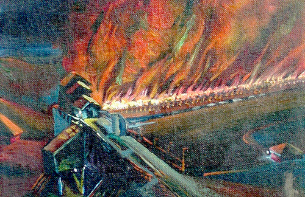
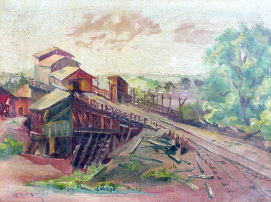
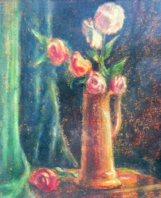
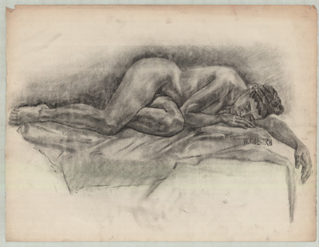
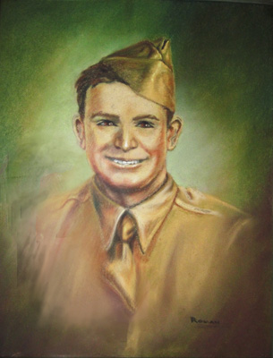
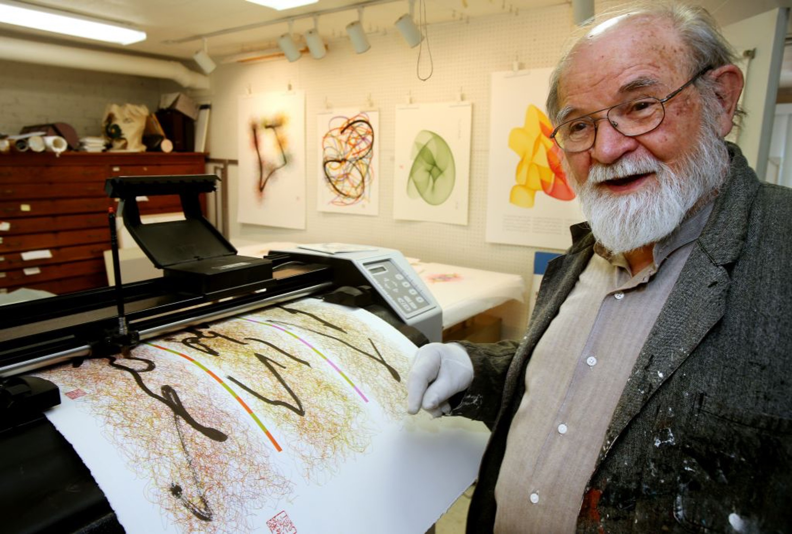

Roman Verostko [Algorithmic Artist]
Roman Verostko [Algorithmic Artist]
Verostko writes, "Born in 1929, at the beginning of the great depression, my parents named me 'Joseph'. For family and friends, I became known as 'Joe' and I assumed the name 'Roman' many years later as a monk. My childhood was colored with the experience of the great depression and the hardships in life for my parents. We grew up in a coal mining town where rows of company houses were clustered in 'patches' within walking distance of the mines and the 'Company Store'. Our 'patch', called 'Rocktown' consisted of two rows of houses and a dirt road that led to the Company Store and to the 'Central Mine'. The mining complex included rows of beehive coke-ovens for converting the coal into coke for the steel mills. The Central ovens were active up to the end of World War II." Below are paintings of what Verostko saw and experienced with these ovens.
 
He continues, "In 1947, after graduating from the East Huntington Township high school, I moved to Pittsburgh where I found an evening job and attended the Art Institute of Pittsburgh during the day. The Art Institute provided a rich studio program including color, life drawing, portraiture, still life and landscape. The program for illustrators introduced me to the fundamentals of typography, calligraphy, and printing technology. Planning to be both an illustrator and a writer I continued my night job after graduation and worked on my drawing and writing during the day. Within a year my drawing, writing and reading turned to an interest in higher education and a search for greater understanding of my Being Here'." Here are paintings and drawings while he attended the Art Institute of Pittsburgh (AIA).
  
He continues, "During my first year after art school a growing interest in spirituality and philosophy led me to Saint Vincent Archabbey located in Latrobe, Pennsylvania. On my 21st birthday, in 1950, I entered a scholastic program in preparation for a full commitment to monastic life. As a monk I pursued philosophical and theological studies that led to ordination as a priest in 1959. Following ordination monastic assignments took me, for periods of time, to New York, Paris and Washington. During these periods I remained faithful to monastic life with this monastery as my home."
By 1968 Roman's spiritual journey led him to life outside the cloister. No longer able to fully embrace the beliefs that bound him to the cloister he departed St Vincent in the summer of 1968 and joined the humanities faculty at the Minneapolis College of Art and Design. He taught world art history, maintained an active studio, and did research on the role of the artist in relation to changing social values and new technologies. A Bush Fellowship Grant provided an opportunity to work with Gyorgy Kepes at the Center for Advanced Visual Studies at MIT (1970). At that time the new information technologies were undergoing enormous growth. Roman was keenly interested in the artist's role in the humanization of these technologies. This interest drew him deeply into the information revolution that wrought immense change in world culture in the last quarter of the 20th Century. While still active with his algorithmic art well into the 20th Century he continued to experience himself as a 20th Century person continuing to wrestle with the spiritual interests that drew him into monastic life 50 years before the turn of the Century. Those interests also informed his painting and drawings of the 1970's.
